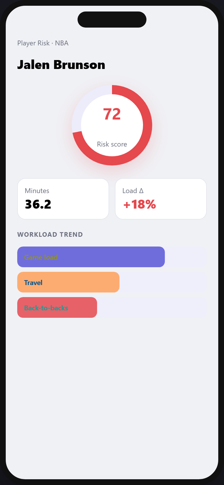

<template>
  <div id="root" data-composition-id="04-injury" data-start="0" data-duration="10" data-width="1920" data-height="1080">
    <style>
      #root { position: relative; width: 1920px; height: 1080px; overflow: hidden; font-family: Inter, system-ui, sans-serif; }
      .clip { position: absolute; }
      #f04-bg { inset: 0; background: linear-gradient(160deg, #F0F1F5, #FDEBEC 120%); }
      #f04-phone {
        left: 52%; top: 6%; width: 380px; height: 780px; margin-left: -100px;
        border-radius: 44px; border: 10px solid #111; overflow: hidden;
        box-shadow: 0 40px 100px rgba(229,72,77,0.2); background: #fff;
      }
      #f04-phone img { width: 100%; height: 100%; object-fit: cover; display: block; }
      #f04-label {
        left: 140px; top: 280px; font-size: 22px; font-weight: 800; letter-spacing: 0.2em;
        color: #E5484D; text-transform: uppercase;
      }
      #f04-title {
        left: 140px; top: 330px; width: 520px; font-size: 64px; font-weight: 900; color: #14121F; line-height: 1.05;
      }
      #f04-pill {
        left: 140px; top: 520px; padding: 14px 22px; border-radius: 999px; background: #fff;
        border: 1px solid #E4E5EC; font-weight: 700; color: #E5484D; font-size: 18px;
      }
    </style>

    <div id="f04-bg" class="clip" data-start="0" data-duration="10" data-track-index="0"></div>
    <div id="f04-phone" class="clip" data-start="0" data-duration="10" data-track-index="1">
      
    </div>
    <div id="f04-label" class="clip" data-start="0" data-duration="10" data-track-index="2">Injury Risk</div>
    <div id="f04-title" class="clip" data-start="0" data-duration="10" data-track-index="3">Before<br/>they get hurt</div>
    <div id="f04-pill" class="clip" data-start="0" data-duration="10" data-track-index="4">Traffic-light scores</div>

    <script src="https://cdn.jsdelivr.net/npm/gsap@3.14.2/dist/gsap.min.js"></script>
    <script>
      window.__timelines = window.__timelines || {};
      const tl = gsap.timeline({ paused: true });
      tl.fromTo("#f04-phone", { x: 60, opacity: 0 }, { x: 0, opacity: 1, duration: 1.0, ease: "power3.out" }, 0.05);
      tl.fromTo("#f04-label", { opacity: 0, y: 16 }, { opacity: 1, y: 0, duration: 0.5 }, 1.2);
      tl.fromTo("#f04-title", { opacity: 0, y: 24 }, { opacity: 1, y: 0, duration: 0.7 }, 1.6);
      tl.fromTo("#f04-pill", { opacity: 0, scale: 0.9 }, { opacity: 1, scale: 1, duration: 0.5, ease: "back.out(1.5)" }, 4.5);
      tl.to("#f04-phone", { scale: 1.03, duration: 4.5, ease: "sine.inOut" }, 5.0);
      window.__timelines["04-injury"] = tl;
    </script>
  </div>
</template>
